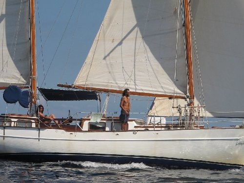
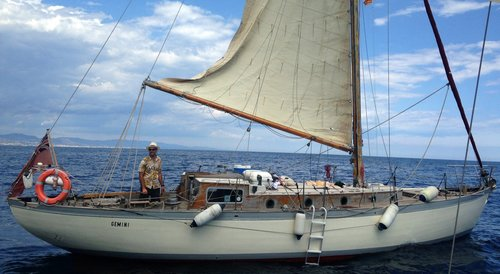
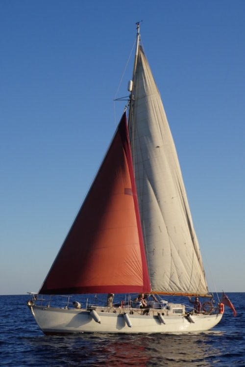
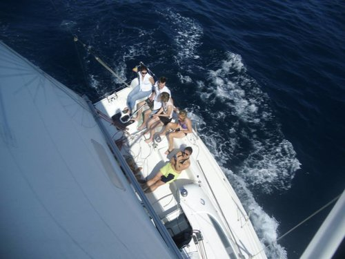

A unique sailing tour like no other! Barcelona is beautiful from every angle, but just picture it from a traditional wooden ketch sailing boat! Join Marc on his boat for a 3 hours sailing trip along the Catalan coastline enjoying Barcelonas unusual and impressive scenery. He is an extremely passionate sailor and lives for his boat on the open sea, even more when he gets to share it with people from around the world. As soon as we leave port we'll set sail in search of that almost indescribable feeling that can only be obtained on a sailing boat, enjoying Barcelona's beaches & coastline from a very different angle. You might want to relax, or help with the various maneuvers, and learn more about this wonderful sport, it's up to you. If you would like to try it out be straight in touch to reserve your place now. Best wishes and happy sailing!
Languages spoken: Spanish, Catalan, English, French No. of participants: 1 - 7 People The price includes: Skipper, diesel for the trip, all safety gear for each person and a great time! Ideal for: Everyone Itinerary: Set off from Barcelona's Port Olympic and sail along the coast, enjoy a drink together and some music. Meeting Point: Port Olympic Barcelona, Pontoon/Gate 7
With plenty of space on her wooden teak deck, you can relax to your hearts content with friends and family. You won't be crowded
into a small cockpit like on modern boats, as you can move around as you wish.
As soon as you have stepped aboard and we have all introduced ourselves, we will prepare to leave the mooring, we'll hoist the sails, switch off the engine, and start sailing in the beautiful Mediterranean sea.
During your boat tour, we'll sail along the Barcelona coastline as the wind direction and sea conditions let us, enjoying a very different and spectacular view of the city. You can kick back and relax, or help out with sailing the boat and
have a go at the tiller, just as you wish.
Built in 1947, Gemini provides an unforgettable location to:
spend some quality time with your family
celebrate a birthday or anniversary
enjoy a peaceful interlude during a hectic stag or hen weekend
have a relaxing day out with friends
treat yourselves to a romantic sunset cruise
Regulatory certifications Gemini is a UK-registered vessel operating in Spanish waters. She is licensed by both the UK Maritime and Coastguard Authority and the Spanish Capitania and undergoes regular official inspections to ensure her seaworthiness and that she carries all the required safety equipment. Dave holds the RYA / MCA Yachtmaster Offshore certificate, and is Commercially Endorsed as Master of Yachts for vessels up to 200 tonnes. He also holds and regularly renews certifications covering Survival at Sea, First Aid, Short Range Maritime Radio Operator Certificate, and Professional Practices and Responsibility Certificate. Gemini is a 14 tonne Berthon Gauntlet designed and built in the port town Lymington in the Solent, which is the south coast of England. Dave became the owner in 2008 and proceeded to sail the boat from Scotland to Barcelona.
“There is nothing - absolutely nothing - half so much worth doing as simply messing about in boats. “ - Ratty, The Wind in the Willows.”
 Samba has raced in the northern Spain for two years. Won several regattas and then was put on the land by her previous owner. This
boat is a regatta sailboat, 9.54 meter long and 2,92 meter wide at the beam. Sailing her is very easy and she responds very fast to the slightest of adjustment to the sails or tiller and is great fun too.
Samba is in excellent condition and well suited to sailing along the coast of Barcelona because she needs little wind.
The sailboat is very light for its length of only 2500 kg. comparable sailboats of its size can weigh up to as much as 1000 kg more. The boat is main driven (33m2) with a 105% Genoa. She was designed as a one design racer and became very
popular in France where she still is used in many races.
Samba has raced in the northern Spain for two years. Won several regattas and then was put on the land by her previous owner. This
boat is a regatta sailboat, 9.54 meter long and 2,92 meter wide at the beam. Sailing her is very easy and she responds very fast to the slightest of adjustment to the sails or tiller and is great fun too.
Samba is in excellent condition and well suited to sailing along the coast of Barcelona because she needs little wind.
The sailboat is very light for its length of only 2500 kg. comparable sailboats of its size can weigh up to as much as 1000 kg more. The boat is main driven (33m2) with a 105% Genoa. She was designed as a one design racer and became very
popular in France where she still is used in many races.
Private Boat Tours along the Barcelona Coastline from Barcelona to Masnou. This boat trip will take a minimum of 6 hours, giving you a picturesque sailing trip to remember for a long time. Port Masnou is a historic centre for sailors trading on the Mediterranean sea and the town itself has kept is unique charm thoughout the ages. There are many great Catalan bars and restaurants to chose from as we break for some lunch before heading back to Port Olympic. For prices and further itinerary regarding a full day trip, please be in touch with us to discuss your ideas and requirements. This way you know that you shall be looking forward to the perfect private sailing trip for your group. The return journey begins at around 2pm so that we can take full advantage of the Garbi Thermal winds during the late afternoon.
The “Gitana” (Gipsy Lady) is a Puma 34, a vintage model designed by Hollman & Pye. The achieved balance between the cruising and regatta capabilities of this model has made her a true classic in pleasure sailing. Her 34ft of length provide a spacious and enjoyable sailing experience for six crew members on a full day's sailing trip, although for shorter trips it can perfectly accommodate up to eight crew members (skipper included). The “Gitana” comes also with a practical bathing platform and exterior shower perfect for enjoying an offshore spontaneous swim for a wonderful cool off under the Mediterranean sun. Her solar panel powered fridge ensures that drinks and snacks will always be cool during the sailing trip, even when the engine is turned off to enjoy the pure wind sailing experience.
There are alternative options of reaching port Badalona and finding the boat.
MCA/RYA Yachtmaster offshore instructor and also holds the Patron de Altura for the Spanish Marina Mercante. He is also a columnist skipper for regatta magazines. Dani is a professional instructor and skipper with more than 15 years experience and has logged over 50,000 nautical miles. The majority of his time has been spent around the Mediterranean and the Atlantic Ocean in yachts ranging from 30 to 80 feet, cruising and racing. His sailing journey began at the age of 8 in his families sailing vessel. After several different working experiences he decided to earn his living and go back to what he loves the most; sailing. We provide a no nonsense approach to assist you in getting your boat from A-B
At Sailing Barcelona we take time to work with our clients to make sure we understand their expectations and requirements in each and every way prior to an agreement taking place. Our aim is to make every contract straightforward with clear pricing information and to ensure that every delivery is carried out professionally. On delivery passages we supply a minimum of 3 crew depending on the vessel size and complexity, that are all RYA qualified instructors and skippers to ensure your peace of mind. We also ensure that when delivering new vessels from boatyards that our skippers have the necessary experience.
On joining a vessel our crew spend as much time is necessary checking all the boat’s systems and preparing the boat for passage, even for short deliveries. This includes a detailed checklist covering the function of more than a hundred items of equipment and fittings from pushpit to pulpit, bilge to masthead. Anything that is not serviceable and might have an effect on the delivery passage will be reported on, and rectified if practical, before setting out. All vulnerable areas of woodwork and upholstery below decks are encased in protective cladding to avoid any inadvertent damage while at sea in rough conditions.
Once underway the skippers establish and maintain a rate of progress towards the destination to complete the passage in the budgeted timescale. For sail boats, this progress will be under sail, however if the wind dies then the engine will be used to ensure that the delivery is not delayed. Owners are welcome to join a delivery although the delivery crew will routinely sail 24 hours a day with only brief stops as necessary for fuel, provisions or to avoid severe weather. Safety is always the first priority and the skipper’s judgement at sea is never questioned. If the skipper decides that the conditions are too rough to proceed then the yacht will head for shelter. The level of experience and sailing expertise required of our skippers allows them to make good progress in conditions of wind and sea that would keep most leisure sailors firmly in their bunks on dry land. Our policy is to sail conservatively and not over-stress sails, rigs or engines. On completion of all deliveries the Skipper completes a detailed condition report on the vessel and its’ systems so that owners have a picture of their boat’s condition on arrival. We never forget how important your boat is to you and ensure that you are kept informed of progress during the passage. We organize every aspect of the delivery passage and there is no requirement for a formal handover from the owner or his representative.
Our depth of experience means that we can organize and provide necessary safety items as well as recommend and install specific equipment. We can undertake handover with, or on behalf of the owner, checking condition and inventory at a time when the boat may be new and unfamiliar.
We have experience of moving yachts in many different parts of the world and in particularly Europe and the Mediterranean, we are familiar with Customs and Clearance procedures which can appear complex and can lead to problems if not undertaken correctly. Our skippers have a good understanding of the processes involved and are well versed in presenting and obtaining the correct paperwork when required, particularly where VAT is concerned.
As an association, we comprise of individuals who work together to achieve a common purpose. Our purpose is to sail often with like minded people and to enjoy the fascinating world of sailing on a non profit basis. Joining as a sailing associate of Barcelona Balearics Sailing Association you can chose your ideal sailing experience. You have an option to simply relax on the teak deck after either a hectic days work or busy day touring the city, or participate in all sailing activities with our skippers as you wish.
This is the ideal solution for those who want to learn to sail and improve their sailing experience before chartering a sailing boat on their own or require further practice to gain confidence in the handling of a classic sailing boat. We also welcome associates that enjoy sailing often to meet other like minded sailors to share the sailing passion. Opportunities may arise from time to time to take part in sailing activities with other sailing associations around the world as we look to extend our reach with other associations wishing to participate in our activities here in Catalonia.
As an associate you will be able to register for all sailing activities through normal channels of communication such as; phone, email, social media channels such as Facebook and our Meet Up page for your convenience.
The Barcelona Balearics Sailing Association must insist that a few basic conditions are met to ensure that we have suitable personalities onboard every trip with us. They are as follows;
The Barcelona Balearics Sailing Association is here to show you that to learn to sail is "learning by sailing". You will be sailing with a maximum of 10 members on board our classic Rival 38 sailing boat, inclusive of a skipper. After a short safety briefing, the skipper will assign a task to participants adjusting to their sailing knowledge and makes sure that all crew members take turns of the different activities as they wish. Members with least experience learn the basic concepts of sailing while those with more experience learn and improve the trimming of the sails and correct their errors. Some associates just know how to have good sailing fun and enjoy the beauty of sailing along the Catalan coastline.
Registered as: Associacio de Navegacio a Velo Barcelona Balears
Registered at: Consell Catala del Esport since 14th January 2013
Registration number: 27243
If there are any questions regarding this privacy policy you may contact us using the information below.
http://www.sailingbarcelona.co.uk/contact
sail@sailingbarcelona.co.uk